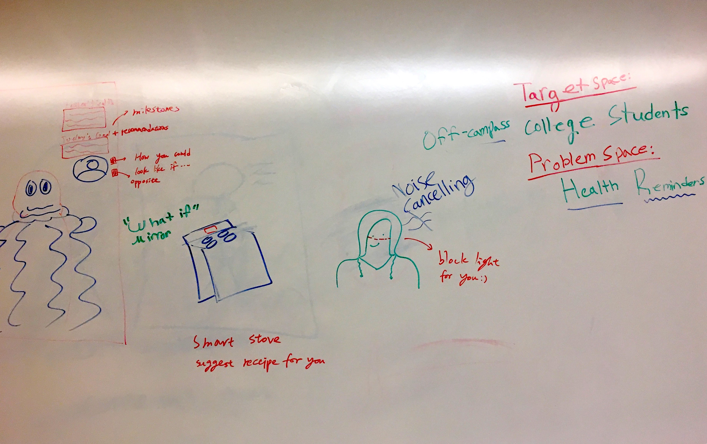
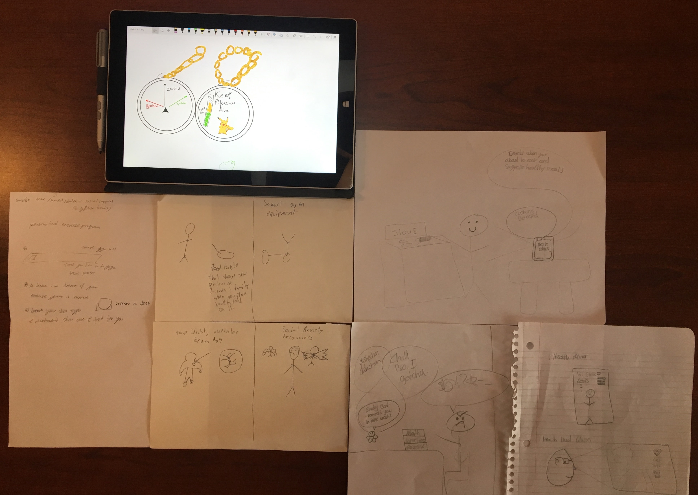
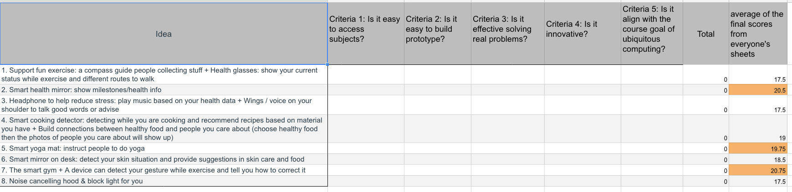

Milestone 1
Summary
After observing, researching and sketching, we converged our focus from 8 areas to 1 problem area which then we sketched 3 potential design solutions.
Target Audience:
Off-Campus University Students
Problem Scope:
Health Reminders (health-related memory aids)
Motivation
We selected our target audience based on three main factors
-
Ease of Access
While something of a pragmatic answer, we know that we will have relatively easy access to a large pool of potential product users with this target audience.
-
Initial Familiarity with User Needs
Two of our own team members are members of the target audience, which gives us an initial basis of personal experience to begin building our design concepts on.
-
A Distinct Problem Space
It is well known that university students have special health needs and concerns, due to the significant time, effort, and stress pressures they face. We decided to focus on the health needs specifically of off-campus university students because we feel that this population is a special subset of the overall health issues. Off-campus students have most of the same health problems that on-campus students do, but, based on our experience, can have more limited access to campus resources designed to help mitigate those problems.
We selected our problem space based on two main factors
-
The problem space was an extension of our one of our initial problems spaces, to assist people with reminders.
-
All members of this team have faced some sort of health issue due to his or her University experiences, so we felt a high degree of motivation for confronting health-related challenges of University life.
Research
Interviewing
We conducted a 30-min interview with a Ph.D. student who has experienced losing weight, gaining muscles, and improving their skin condition.
Regarding losing weight, they would combine proper exercising and improving their diet. In this process, self-discipline is very important to them, and they said, "that the temptation of delicious food is the greatest enemy". They recall, there were several times they would be able to resist the temptation. But outside negative factors would make it harder for them to reach their goals. Tiredness and hormonal changes would lead to eating more sweets.
There were also some other factors such as living with a roommate who would value a healthy diet and living in an area where it is harder to access sweets. These helped them cultivate a good habit of cooking healthy meals by themselves and quit bad habits like drinking too much sweet tea.
As for gaining muscles, they would use an app called “30 Days Challenge” which can remind them of exercising and teach them how to do weight training. It had a set of tasks and videos they could follow. Their major pain point is that they would get muscle soreness the day after doing weight training. In addition to weight training, they would also do a little bit of Yoga to stretch. They taught themself by watching videos on YouTube.
About solving facial skin issues, they saw doctors and took medicine. They seldom forgot to take the medication. In addition to this, they quit the bad habit of eating too much sweets and drinking too much bubble tea. They substituted those sweets by drinking coffee which helped them improve the endocrine disorders.
Gym Observations
Half of our group members regularly attend a gym, and have noted some of the things they've observed while working out.
- Cardio is one of the, if not the most popular activities at the gym. Treadmills and ellipticals are constantly full as opposed to other types of equipment (e.g. weights)
- A lot of people prefer to participate in fitness classes rather than being in an open environment where they can choose their own workout every time.
- Several people who try doing exercises often end up doing them incorrectly. For example, we've observed several people in the past who have tried using weights but they don’t have the right form during the exercise and it ends up reducing the results they would have.
- Several people have workout coaches or trainers that help them plan the optimal workout for them. These trainers often tell them what machines to use, how to correctly use them, and how long or how many reps they should do on the machines before starting a different exercise.
- Almost everyone at the gym is listening to music during their workouts. This means they also have their phones on them the entire duration of the workout
- Most people at the gym spend ~30 minutes on their workouts for the day - this can be looked into further to try and get more exact times
Student Eating Observations
We've also had a chance to observe how some of our fellow students eat over the time we've been at Umich, below are some observations that we've made.
- Some students choose to bring their own lunches, which often are home cooked meals instead of something pre-packaged. (e.g. eating rice and vegetables as opposed to a frozen TV dinner)
- Students like to snack frequently, but they snack on a variety of foods, ranging from healthy, like fruit, to unhealthy, like potato chips.
- Eating is usually something fairly quick for most students, that generally happens when they have breaks between classes or other activities.
- Students often get meals from the restaurants around campus, in the past week we’ve seen people eating from cottage inn, buffalo wild wings, chipotle, panera, and starbucks
Ideation Process
Day 1
We held two 2-hour ideation sessions on separate days. The focus of the first session was to better define our target audience and problem space. During a previous team activity, we had defined memory aids and smart devices for those with disabilities as our two initial problem spaces. We had initially decided those spaces based on what audiences we ideally would like to help. Based on the feedback we received from the last class session, we realized that we need to consider some more practical considerations, such as being able to recruit and observe from our target audience. This, lead us to the University student population, but we wanted to focus on a specific portion of that population. As two of our team members live off-campus, and we had had previous discussions about some of the challenges that off-campus students face (such as limited access to after-hour employer events and the like), we decided to narrow the target population to off-campus university students. From there, we brainstormed as a group for solutions to various problems off-campus university students can have. As we discussed initial ideas, we realized that several of our initial ideas were related to health concerns, and usually involved a reminder component. This lead us to our problem space of health-related reminders.
Day 2
For Day 2, we wanted to further develop our concepts and think realistically of the feasibility of the project and the limited time we have in the semester. To develop these concepts, we took 30 minutes for individual ideation, with each member looking up various reference materials for their ideas. We then shared our ideas and references, and combined them with the ideas from the tail end of our Day 1 brainstorming, to generate our next concepts list.
Converge
From here, we had to determine which 3 concepts we would use for our Milestone 1 deliverable. To do this, we developed a list of assessment criteria. These criteria were:
- Ease of Audience Access
- Feasibility of Working Prototype Construction
- Effectiveness at Solving the Intended Problem
- Degree of Innovation
- Alignment with Ubiquitous Computing Concepts
Each team member then separated rated each concept against these criteria on a 5-point scale, with 1 represented the “Not Acceptable”, and 5 represented “Very Good”. We then summed the ratings for each person/idea combination, and averaged the sums across all team members for each concept. The 3 most highly-rated concepts became our concepts for this Milestone.
The 3 Big Concepts
1. Smart Gym
This concept is a gym with health-monitoring capabilities to maximize the time and effort of off-campus students who will have a limited window to both learn and use the gym.
This gym includes the following features
-
Easy Login
A login board that accepts the student’s University ID. Tied to that ID is the student’s gym history. When the student first arrives at the gym and swipes their card, the login board will access the student’s history and generates a workout plan for the session.
-
Automatically Setting For Workout Machine
Each individual workout machine will have it’s own data connection, and will be able to access the student’s history. Each machine will set up it’s own weights, resistances, training times, and other settings to create a “just-right” challenge for the student.
-
Workout Machine Sensors
The workout machines will have sensors built into them to measure the physical state of the student as the machine is being used. The workout can then be adjusted on the fly to match the physical condition of the student. The machine itself can tell when the student needs to rest, and can suggest that the student hydrate when needed, unlocking an on-site drink dispenser to provide hydration.

2. Smart Yoga Mat
Our second concept is a smart yoga mat which can instruct users how to do certain yoga positions and detect and correct users’ mistakes.
This Yoga Mat includes the following features
-
Instructional Screen
A screen in the front of the mat that instructs the user for a routine and the correct yoga positions.
-
Senesors
The sensors in the mat will be used to detect the user's placement and positioning in order to guide them.
-
Easy Carry
The yoga mat will be the same size as a regular yoga mat and can be rolled up for traveling purposes.
-
Self Guidience
This design can be a benefit for people who do yoga through self-guidance. We believe busy students don't have time to take yoga classes so they tend to do yoga at home. If a person wants to do yoga with friends outside instead, it is can be very convenient for because of the guidance and flexibility the yoga mat provides.
3. Smart Health Mirror
To help students live a healthier lifestyle, one solution we are proposing is the idea of a smart health mirror. The goal of the mirror is to help students learn more about their current health and also to achieve goals that are defined by the user.
The health mirror has three main focues
-
Health Scan
The first idea is making the user aware of their current health condition. For example, the mirror will provide details such as the user’s weight, heart rate, blood pressure, calories, heart rate, etc. The goal of the first component is to give the user an overall picture of their current health when they're standing in front of the mirror.
-
Goals and Benefits
The second focus area for the mirror is to give the user steps to help them achieve their goals and a preview of some of the benefits from achieving those goals. For example, a user might set the goal that they would like to lose 10 pounds in the next 2 months. The mirror would then create a series of steps personalized for the user based on their day to day health conditions to help them try and achieve these goals; such as walking more frequently, eating a certain number of calories per day, and recommending personalized fitness routines. In addition to creating goals, the mirror will also display potential health benefits of achieving each goal, such as an increase in energy, less pain on certain body parts, improved sleep, etc.
-
Result Image Prediction (potential)
We also pondered about letting users have the option to preview what they might look like if they achieve their ideal goals. In this example, the user would preview of what they might look like if they lost 10 pounds. However, we realize this is a sensitive area, and are not fully committed implementing this feature because of potential undesirable consequences.